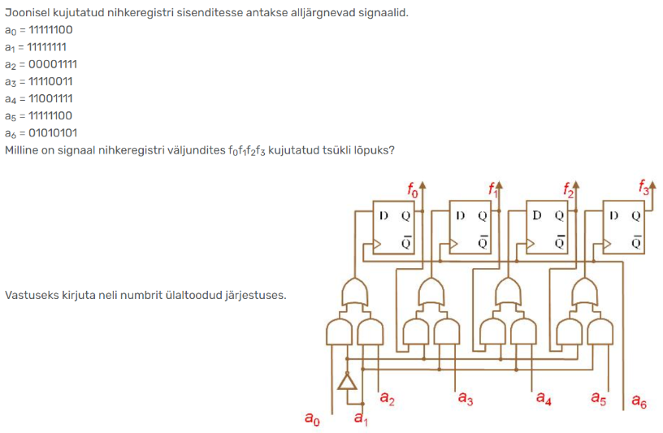
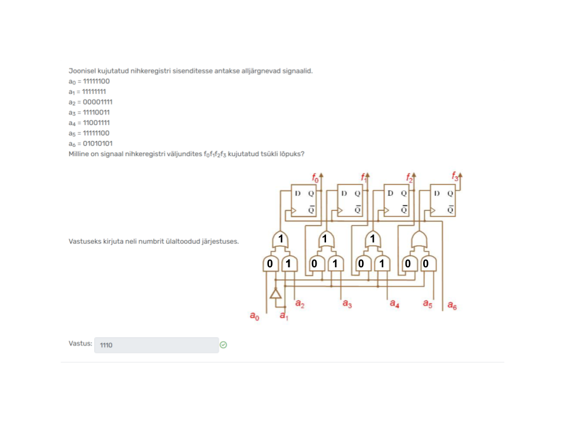

Näidislahendusega ülesanne
-

- Pildil on nihkeregister, milles a1 võrdub kogu aeg ühega. Kõik AND-id, kuhu väljundid (f-id) suunduvad saavad oma teiseks sisendiks alati nulli, kuna see tuleb a1 vastandväärtusest, seega eelmised väljundid ei mõjuta järgmisi väljundeid (need n-ö nullitakse ära). See tähendab, et kogu bitijadaga pole vaja ülesannet läbi teha, piisab küsitud kohast. Küsitud on väljundeid tsükli lõpus – see tähendab, et peame tsükli läbi tegema signaalide (a-de) viimase numbriga ehk viimase biti väärtusega. Ehk peame skeemi läbi tegema, kui a0 = 0, a1 = 1, a2 = 1, a3 = 1, a4 = 1, a5 = 0, a6 = 1
- Alustame skeemi alt. Väärtused liiguvad mööda juhtmeid edasi. Mummu tähendab väärtuse vastupidiseks muutmist pärast mingit operatsiooni ehk tehet bittidega. Kui aga tehet teha ei taheta, vaid tahetakse lihtsalt väärtust vastupidiseks muuta, kirjutatakse mummu ette kolmnurk. Ümara tipuga “kolmnurkne” kujund tähendab AND operatsiooni ehk mõlemad väärtused peavad olema “tõesed” ehk ühed. AND operatsioonist võib mõelda ka kui korrutustehtest: 0*0 = 0, 0*1 = 0, 1*0 = 0, 1*1 = 1. Terava tipuga kolmnurkne kujund tähistab OR operatsiooni ehk vähemalt üks väärtustest peab olema “tõene” ehk 1. Ka mõlemad võivad olla ühed. Täidame kujundid vastavalt sellele ära. 
- Oleme ära täitnud nii palju kui võimalik ilma väljundeid (f-id) välja arvutamata. PS! kuna a1 vastandväärtus on 0, siis kõik AND-id, mille sisend see on, on alati nullid ja teine sisend ei loe. Väljundi arvutamiseks vaatame trigeri tüüpi (meie skeemil D), taktsagedust (tähis tühi kolmnurk, mitte segamini ajada väärtuse pööramisega) ja sisendit.
- Arvutame esimese väljundi f0. Meil on D-triger, mille väljund tuleb Q-st ilma katuseta ehk väärtust ei pöörata vastandväärtuseks. Taktsignaal on a6, mis on parasjagu 1 – see tähendab, et eelmise tsükli tehte väärtus muutub uue tsükli tehte väärtuseks (kui oleks 0, siis peaks arvutama eelmise tsükli väljundi ja see oleks ka uue tehte väljundiks). Sisend tuleb OR-ist ja on 1, seega on ka väljund üks. Nagu ka teada, siis D-triger on data-triger ehk “salvestab” lihtsalt väärtuse, mis tema sisendiks on.
- Kordame sama ülejäänud väljunditega.
- YAYY!! Meil on väljundid ja seega vastus käes!